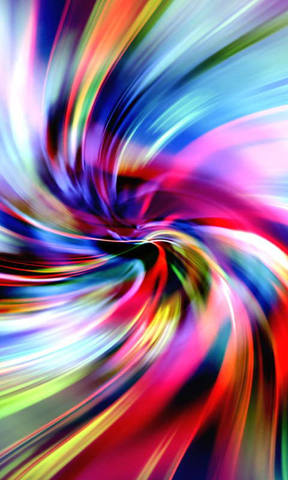
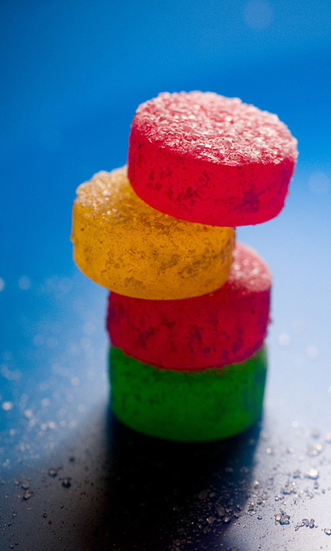

<!DOCTYPE html>
<html>
  <head>
    <meta charset="utf-8">
    <meta name="viewport" content="initial-scale=1, maximum-scale=1, user-scalable=no, width=device-width">
    <title></title>

    <link href="lib/ionic/css/ionic.css" rel="stylesheet">
    <link href="css/style.css" rel="stylesheet">

    <!-- IF using Sass (run gulp sass first), then uncomment below and remove the CSS includes above
    <link href="css/ionic.app.css" rel="stylesheet">
    -->

    <!-- ionic/angularjs js -->
    <script src="lib/ionic/js/ionic.bundle.js"></script>

    <!-- cordova script (this will be a 404 during development) -->
    <script src="cordova.js"></script>

    <!-- Firebase -->
    <script src="https://www.gstatic.com/firebasejs/3.3.0/firebase.js"></script>

    <!-- AngularFire -->
    <script src="https://cdn.firebase.com/libs/angularfire/2.0.2/angularfire.min.js"></script>
    <!-- your app's js -->
    <script src="js/app.js"></script>
    <script src="js/config.js"></script>
    <!-- <script src="js/service.js"></script> -->
    <script src="js/controllers.js"></script>

  </head>

  <body ng-app="starter">
      <ion-nav-bar class="bar-light">
        <ion-nav-back-button>
        </ion-nav-back-button>
    </ion-nav-bar>
    <ion-nav-view></ion-nav-view>

    <script id="templates/intro.html" type="text/ng-template">
      <ion-view view-title="Intro">
        <ion-nav-buttons side="left">
          <button class="button button-positive button-clear no-animation"
                  ng-click="startApp()" ng-show="!slideIndex">
            Skip
          </button>
          <button class="button button-positive button-clear no-animation"
                  ng-click="previous()" ng-show="slideIndex > 0">
            Prev
          </button>
        </ion-nav-buttons>
        <ion-nav-buttons side="right">
          <button class="button button-positive button-clear no-animation"
                  ng-click="next()" ng-show="slideIndex != 4">
            Next
          </button>
          <button class="button button-positive button-clear no-animation"
                  ng-click="startApp()" ng-show="slideIndex == 4">
            Start
          </button>
        </ion-nav-buttons>
        <ion-slide-box on-slide-changed="slideChanged(index)">
          <ion-slide>
            <!-- <h1>1</h1> -->
            <div id="logo">
                
            </div>
          </ion-slide>
          <ion-slide>
            <!-- <h1>2</h1> -->
            <div id="logo">
                
            </div>
          </ion-slide>
          <ion-slide>
            <!-- <h1>3</h1> -->
            <div id="logo">
                
            </div>
          </ion-slide>
          <ion-slide>
            <!-- <h1>3</h1> -->
            <div id="logo">
                
            </div>
          </ion-slide>
          <ion-slide>
            <!-- <h1>3</h1> -->
            <div id="logo">
                
            </div>
          </ion-slide>
        </ion-slide-box>
      </ion-view>
    </script>
<!-- <ion-nav-view cache-view="false"></ion-nav-view> --> <!-- เพิ่มเติ่ม -->
  </body>
</html>
